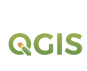

Tools
-

Free and open-source Geographic Information System that supports viewing, editing, and analysis of geospatial data.
-
GeoServer is an open source server for sharing geospatial data.
-

It can display map tiles, vector data and markers loaded from any source. OpenLayers has been developed to further the use of geographic information of all kinds.
Data
| Name | Source | Description | Download |
|---|---|---|---|
| Air Quality Data | CAMS Reanalysis | Monthly NO₂, PM2.5, PM10 concentrations (2013–2022). December 2022 data must be downloaded and processed manually. | Download |
| Land Cover Data | ESA CCI / CDS | Annual land cover classification (2013–2022), 300m resolution. 2022 is mandatory. Europe suggested bbox: N72, W-25, S30, E45. | Download |
| Population Data | WorldPop | 2020 unconstrained population raster data, 100m resolution. |
WorldPop Hub |
| Case Study Area | Provided by Project Team | Boundary vector layer of assigned countries, distributed as GeoPackage. | Download |